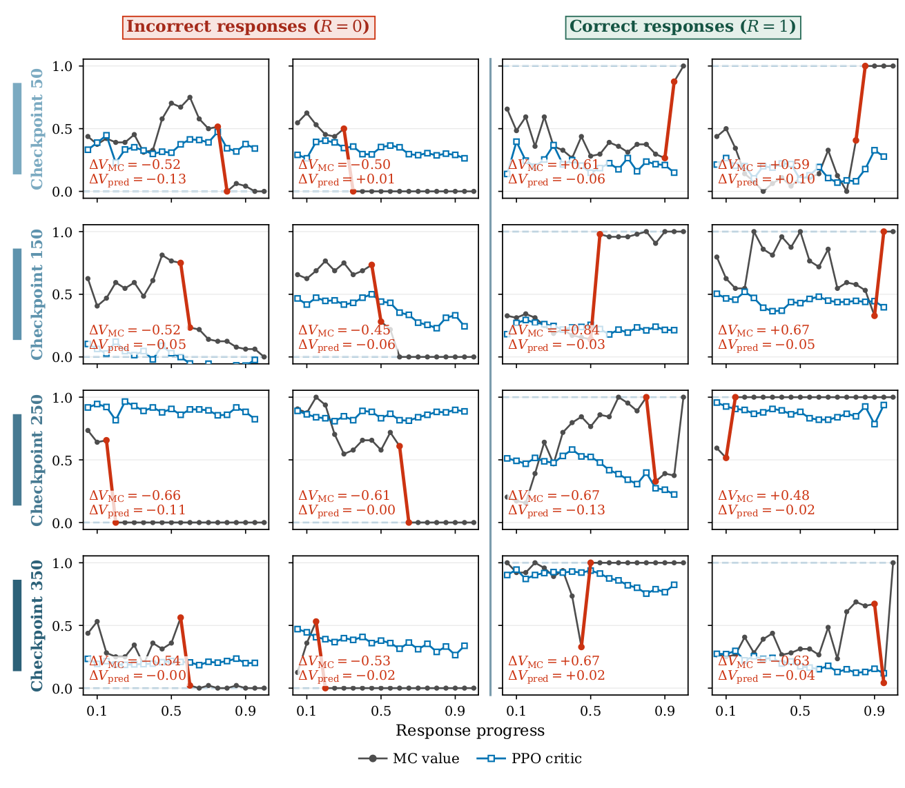
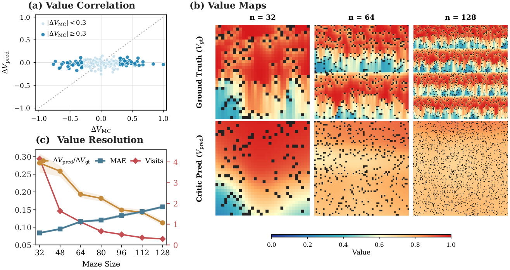
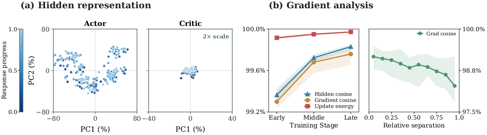
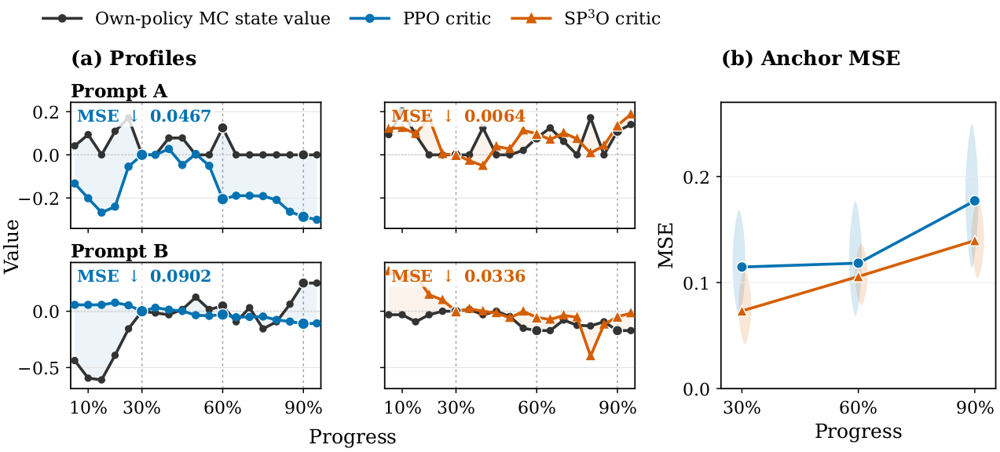
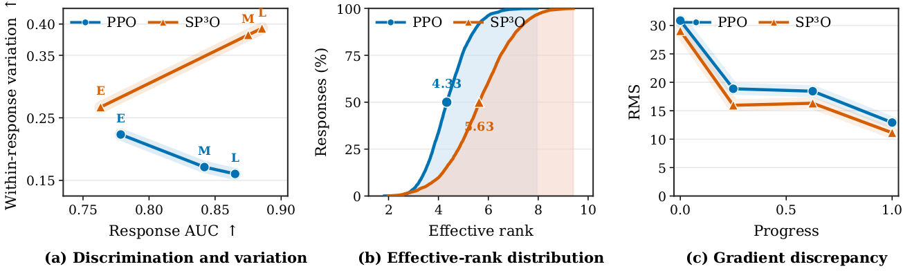
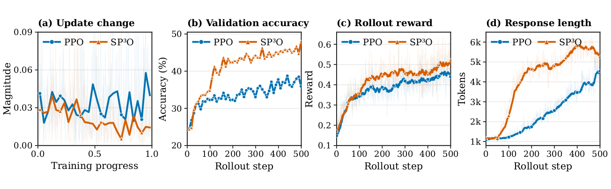
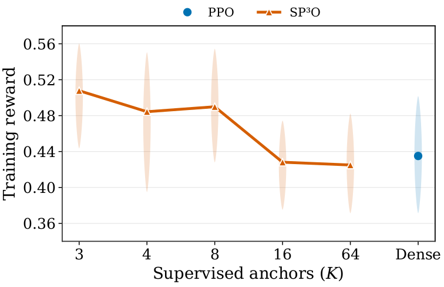

Rethinking Critic Learning in PPO:
Understanding and Mitigating Value Flattening
SParse Proximal Policy Optimization (SP3O)
Abstract
In reinforcement learning for large language models, Proximal Policy Optimization (PPO) commonly uses a critic to estimate state values and reduce the variance of policy updates. However, we uncover a systematic failure mode in PPO critics, which we call Value Flattening: state values estimated from multiple Monte Carlo continuations change sharply across intermediate states while critic predictions remain comparatively flat.
Our analyses relate Value Flattening to an implicit variance penalty in the critic loss and redundant updates from temporally correlated states with similar gradients. Motivated by these findings, we introduce SParse Proximal Policy Optimization (SP³O), which applies the value loss to only a few well-separated states in each response. Across Qwen3-4B-Base and Qwen3-8B-Base, SP³O mitigates Value Flattening and consistently improves the learned policy.
01
Problem: Value Flattening
PPO critics fail to preserve meaningful within-response changes in state value. The mismatch is visible throughout training and becomes more pronounced as the state space grows.


02
Why does Value Flattening occur?
Dense critic supervision introduces an implicit variance penalty and aggregates redundant updates from highly correlated neighboring states.
Implicit variance penalty
With terminal-only rewards and γ = λ = 1, every state in a response uses the same sampled terminal return. The dense MSE objective therefore decomposes into a mean-fitting term and a term that directly penalizes prediction variance within the response.
Redundant temporal updates
Adjacent LLM states differ by only one token and share almost their entire history. Their similar representations and aligned gradients cause dense token-level supervision to repeatedly apply nearly the same update.

03
SP³O: Method and Results
SP³O keeps the actor objective, rollout procedure, and return targets unchanged. It applies critic loss only at a few well-separated states, reducing both the variance penalty and redundant neighboring updates.


| Model | Method | AIME24 | AIME25 | AIME26 | AMC23 | MATH500 | Minerva | Olympiad | Avg. |
|---|---|---|---|---|---|---|---|---|---|
| Qwen3-4B-Base | Base | 4.58 | 3.75 | 4.38 | 25.08 | 42.78 | 22.71 | 22.35 | 17.95 |
| PPO | 17.50 | 19.90 | 14.69 | 61.80 | 70.15 | 42.82 | 36.35 | 37.60 | |
| GRPO | 17.19 | 16.19 | 10.10 | 63.83 | 78.21 | 45.71 | 43.62 | 39.26 | |
| SP³O | 23.02 | 23.54 | 22.08 | 69.92 | 83.79 | 47.93 | 48.68 | 45.57 | |
| Qwen3-8B-Base | Base | 7.40 | 7.92 | 5.94 | 37.66 | 54.08 | 24.69 | 27.36 | 23.58 |
| PPO | 30.21 | 25.10 | 23.33 | 72.19 | 86.33 | 48.81 | 53.56 | 48.50 | |
| GRPO | 28.50 | 22.04 | 22.70 | 73.82 | 85.26 | 52.06 | 50.98 | 47.91 | |
| SP³O | 33.91 | 28.02 | 27.39 | 75.00 | 87.33 | 47.40 | 54.50 | 50.51 |
Table 1. In-domain mathematical-reasoning accuracy (%), averaged over 32 generations. The final column averages the seven listed tasks.
| Model | Method | ARC-C | MMLU-Pro | GPQA | AGIEval† | BBH† | ZebraLogic† | Avg. |
|---|---|---|---|---|---|---|---|---|
| Qwen3-4B-Base | Base | 34.98 | 16.17 | 14.02 | 27.93 | 21.11 | 1.35 | 19.26 |
| PPO | 89.19 | 54.39 | 34.85 | 65.87 | 57.50 | 9.90 | 51.95 | |
| GRPO | 90.96 | 56.87 | 38.89 | 68.18 | 71.17 | 12.58 | 56.44 | |
| SP³O | 91.02 | 61.75 | 38.89 | 71.44 | 73.35 | 19.20 | 59.28 | |
| Qwen3-8B-Base | Base | 61.82 | 36.22 | 27.02 | 48.59 | 50.71 | 4.90 | 38.21 |
| PPO | 93.84 | 64.19 | 47.22 | 74.52 | 79.27 | 27.25 | 64.38 | |
| GRPO | 93.04 | 66.27 | 49.49 | 75.15 | 78.10 | 27.40 | 64.91 | |
| SP³O | 93.13 | 65.83 | 49.94 | 76.95 | 80.89 | 31.45 | 66.37 |
Table 2. Out-of-distribution evaluation accuracy (%), averaged over four generations. † indicates datasets scored with the xVerify verifier.

04
Ablation
A small number of well-spaced supervision states works best. Increasing supervision density eventually approaches the dense PPO baseline, while random placement underperforms fixed coverage.

| Main anchors | Accuracy (%) |
|---|---|
| PPO baseline | 37.60 |
| Random | 36.59 |
| 0.2 / 0.5 / 0.8 | 44.65 |
| 0.3 / 0.6 / 0.9 | 45.57 |
Table 3. Anchor-placement ablation on Qwen3-4B-Base (K = 3).
Citation
If this work is useful for your research, please cite the paper.
@article{li2026rethinking,
title = {Rethinking Critic Learning in PPO:
Understanding and Mitigating Value Flattening},
author = {Li, Yizhuo and Yan, Jianhao and Luo, Yun and
Wang, Zhi and Wang, Futing and Tan, Rong-Xi and
Tian, Kanghui and Cui, Ganqu and Ding, Ning and
Zhao, Peilin and Li, Yafu and Cheng, Yu},
year = {2026},
eprint = {2609.18708},
archivePrefix = {arXiv},
primaryClass = {cs.LG}
}